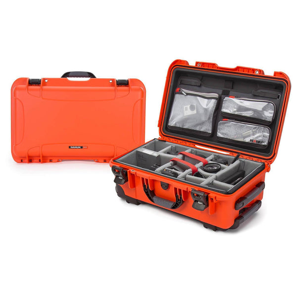

01 / NANUK
NANUK 935
Pro Photo Kit
The case that comes with me.
Anytime I’m going anywhere on a shoot, the 935 is coming with me. It gives me enough room for a serious amount of equipment without worrying about everything getting crushed, wet, or thrown around during transportation. The orange color makes it easy to spot when a room is full of black cases and bags.
The Pro Photo Kit setup keeps the equipment organized instead of turning one large case into a gear hunt. I can get to what I need without digging through the entire thing. It feels solid, and after using it regularly, I trust it with my equipment. It has become part of my standard setup—not something I only bring out for bigger jobs.
The only thing I wish NANUK offered is an air-filled wheel option. New York sidewalks are rough: uneven pavement, cracked concrete, curbs, subway entrances. A little more cushion would make a heavy case even easier to move. Besides that, the 935 has been one of the most dependable cases I own.
View official product ↗